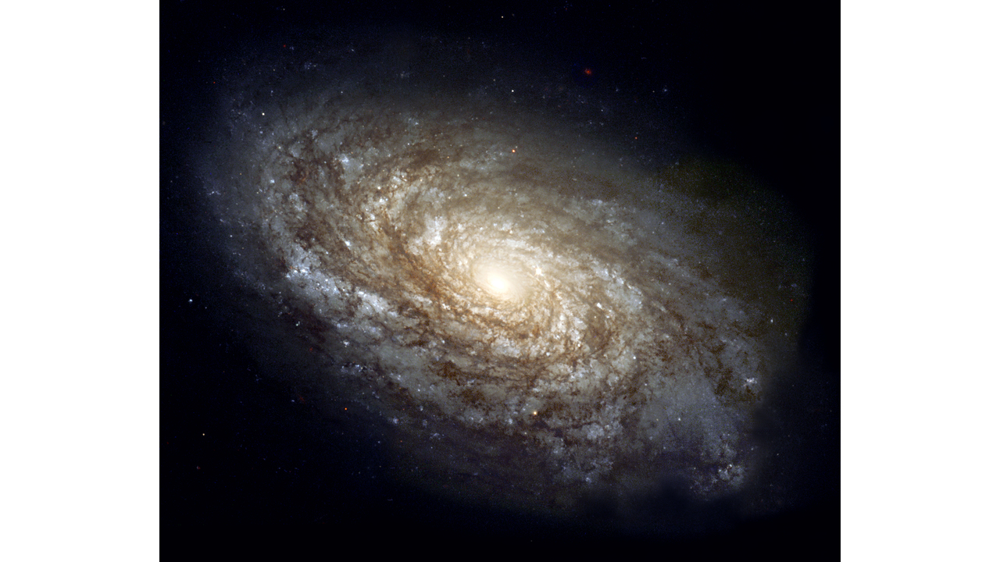

Hitchhiker's Guide to build a universe
The Universe is big. Really big. You just won't believe how vastly, hugely, mind-bogglingly big it is. Surely, it should not be possible to create your own universe on a $200 laptop in your bedroom. But, it is. Don't believe me? Well let's start with a test. Below you will find two images: one of which is created using a simulation known as FIRE (FIRE Simulation Project), while the other is a real galaxy observed through JWST. Can you identify which is which?

In case you could not, the one on the right is the galaxy NGC 4414, a dusty spiral galaxy pretty close to the Milky way, just 62.3 million light years away.